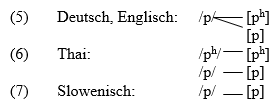

2 Gegenstand und Sinn der Phonologie
Im Alltag, sei es privat oder im Beruf, verständigen wir uns vorrangig mit Hilfe von mündlich oder schriftlich geführten Texten. Aufbau und Wirkung eines Textes sind leichter zu erkennen, wenn man ihn nach nachvollziehbaren Prinzipien und Methoden in kleinere Einheiten zerlegt. In der Sprachwissenschaft hat sich eine längere Liste von Einheiten in Texten etabliert, die man verschiedenen Bereichen zuordnen kann. Hier sollen vor allem diejenigen Bereiche erwähnt werden, die gemeinsam die Grammatik einer Sprache umreißen.
Der Text ist die umfangreichste und hierarchisch höchste kommunikative Einheit, die aus inhaltlich zusammenhängenden Äußerungen besteht und eine nachvollziehbare und sortenspezifische Struktur aufweist. (Engel 2008: 33)
Äußerungen lassen sich als Laut- oder Schriftzeichenketten definieren, die von einem Sprecher zwischen zwei Pausen produziert werden und aus einem oder mehreren Sätzen bestehen können. (Bußmann 1990: 52) Im Gegensatz zu Sätzen sind sie kommunikative Einheiten und gehören somit auf die Ebene der Performanz oder Parole.

Die Phoneme (distinktive Sprachlauttypen) und Phone (Sprachlaute) gehören zu den kleinsten Einheiten eines mündlichen Textes.
Die Phonologie ist eine Teildisziplin der Sprachwissenschaft, die sich mit der lautlichen Seite von sprachlichen Äußerungen beschäftigt. Der Ausdruck wird verschiedenartig verwendet. Im Rahmen dieses Lehrbuches wird er als Oberbegriff für alle Teildisziplinen verwendet, die die lautliche Seite von Sprache untersuchen, also als Oberbegriff für Phonetik, Phonemik, Phonotaktik und Prosodie. So wird der Ausdruck auch in amerikanischen sprachwissenschaftlichen Studien verwendet (Bußmann 1990 : 58).
In vielen wissenschaftlichen Arbeiten wird Phonologie im Sinne von Phonemik verwendet, also in einem eingeschränkteren Sinne als in dieser Vorlesung. Der slowenische Ausdruck glasoslovje wird von Toporišič ebenfalls als Oberbegriff für die oben angeführten Teilgebiete verwendet (vgl. (Toporišič 1992 : 50).
2.1 Phonemik vs. Phonetik
Die Beschreibung einer Sprache ist aus etischer und emischer Sicht möglich. Die beiden Wortbildungselemente etisch und emisch bezeichnen den Unterschied zwischen materieller vs. funktioneller Sprachbetrachtung.
Die Phonetik untersucht die “akustisch meßbaren und artikulatorisch definierbaren aktuellen Lautäußerungen” (Bußmann 1983). Sie “betrachtet Sprache gewissermaßen von außen und erfaßt und beschreibt das gesamte vorhandene Lautmaterial, ohne notwendigerweise Bezug auf eine bestimmte Sprache zu nehmen.” (SSM 1: 1). “Ihre Basis sind Erkenntnisse der Anatomie, Physiologie, Neurologie und Physik.” (Bußmann 1990 : 579).
Die Phonemik “betrachtet die zu beschreibende Sprache von innen, d.h. sie untersucht die Beziehung der Laute zueinander und deren Funktion in dieser Sprache.
Aufgrund der oben getroffenen Unterscheidung zweier Betrachtungsweisen sind zwei Arten von Grundeinheiten anzusetzen. Definitionen der beiden Grundeinheiten:
Als Grundeinheit der Phonetik wird das Phon (der Sprechlaut) genannt, d.h. die “kleinste durch Segmentierung (Zerlegung) gewonnene lautliche Einheit, die noch nicht als Repräsentant eines bestimmten Phonems klassifiziert ist.” (Bußmann 1990 : 576).
Die Grundeinheit der Phonemik ist das Phonem. Das Phonem ist ein Lauttyp und wird als Bezeichnung verwendet “für kleinste aus dem Schallstrom der Rede abstrahierte lautliche Segmente mit potentiell bedeutungsunterscheidender Funktion.” (Bußmann 1990 : 576).
Die Notation von Phonen bzw. Phonemen unterscheidet sich voneinander.
Phone werden in eckigen Klammern notiert: [fo:n].
Phoneme werden hingegen zwischen Schrägstrichen geschrieben: /r/.
Die Begriffe Phon und Phonem sollen an einigen Beispielen mit den stimmlosen bilabialen Verschlußlauten verdeutlicht werden.

Aus phonetischer Sicht kommen in den englischen, deutschen und thailändischen Wörtern in (1), (2) und (3) zwei stimmlose bilabiale Verschlußlaute vor, und zwar [ph] und [p], in den slowenischen in
- hingegen nur ein stimmloser bilabialer Verschlußlaut, und zwar [p]. Vom Standpunkt der Phonetik besteht also in dieser Hinsicht ein Unterschied zwischen dem Deutschen, Englischen und Thai einerseits und dem Slowenischen andererseits.
Aus phonemischer Sicht kann man jedoch feststellen, daß die Verschlußlaute [ph] und [p] im Englischen und Deutschen in einem anderen Verhältnis zueinander stehen als im Thai. Die beiden Verschlußlaute treten im Englischen und Deutschen in unterschiedlichen Umgebungen auf und sind somit ledigliche Varianten eines Phonems (Allophone). Im Thai kommen beide Verschlußlaute an derselben Stelle im Wort vor. Da ihre lautlichen Umgebungen identisch sind, bilden die Laute [ph] und [p] den einzigen phonetischen Unterschied in diesen Wörtern. Die beiden Wörter im Thai haben unterschiedliche Bedeutung, was auf die beiden Verschlußlaute zurückgeführt werden kann. Die stimmlosen bilabilaen Verschlußlaute [ph] und [p] haben im Thai bedeutungsunterscheidende Funktion, im Englischen und Deutschen hingegen nicht. Daher müssen sie im Thai zwei Phonemen zugeordnet werden (6), im Englischen und Deutschen hingegen nur einem Phonem (5). Das slowenische Phonem /p/ wird in (4) immer nur durch ein Phon realisiert, und zwar durch [p].

2.2 Phonotaktik
Eine weitere wichtige Teildisziplin der Phonologie ist die Phonotaktik.
Die Phonotaktik ist die Lehre von den in einer bestimmten Sprache zugelassenen Laut- oder Phonemkombinationen. (Bußmann 1990 : 584)
Für jede Sprache kann man phonotaktische Regeln für die Verbindbarkeit von Phonemen in verschiedenen Stellungen bilden. Im Deutschen und Slowenischen kann beispielsweise der velare Nasalkonsonant [N] vor einem k- auftreten (z.B. dt. Schank, sl. šunnka). Andererseits können aber auch Regeln für Verbindungsbeschränkungen angegeben werden. Der velare Nasalkonsonant kann weder im Deutschen noch im Slowenischen – im Unterschied zu Sprachen in anderen Teilen der Welt (z.B. in Bantusprachen in Afrika) – am Anfang einer Silbe auftreten (z.B. dt. *[N]ase, sl. *[N]oht). Am Anfang einer Silbe kann jedoch in beiden Sprachen ein dental-alveolarer Nasalkonsoant erscheinen (z.B. dt. [n]ase, sl. [n]oht)
2.3 Prosodie
Eine weitere grundlegende Teildisziplin der Phonologie ist die Prosodie.
Die Prosodie ist die Gesamtheit sprachlicher Eigenschaften wie Akzent, Intonation, Sprechpausen. (Bußmann 1990 : 618)
Die prosodischen Einheiten beziehen sich im allgemeinen auf Einheiten, die größer sind als ein Phonem (oder Segment). Deshalb werden sie in der phonologischen Literatur auch oft als suprasegmentale Merkmale bezeichnet. Prosodische oder suprasegmentale Merkmale beziehen sich demnach auf sprachliche Einheiten wie z.B. Silbe, Wort oder Satz und Äußerung. Die Prosodie untersucht unter anderem auch Sprechgeschwindigkeit, Grenzsignale (Junkturen), Sprechpausen und Sprechrhythmus.
2.4 Phonem und Hierarchie
Die phonologisch relevanten Einheiten können verschiedenen hierarchisch gegliederten Ebenen zugeordnet werden. Jede Einheit einer Ebene besteht aus Einheiten der darunterliegenden Ebene und dient gleichzeitig als Baustein für die Einheit der nächsthöheren Ebene. Die Anzahl der phonologisch relevanten Ebenen ist theorieabhängig. Die Phonemebene wird in phonologischen Modellen oft als die unterste Ebene der phonologischen Hierarchie angesetzt. Darüber liegen zumindest die Silben- und die Wortebene. In vielen Sprachen ist es oft nützlich, auch noch andere Ebenen anzusetzen, etwa eine Akzentgruppenebene, eine Satzebene und eine Äußerungsebene anzusetzen, um bestimmte Erscheinungen (wie z.B. die stellungsbedingte Akzentuierung bestimmter Silben, Frequenzverläufe, Lautreduktionen, Vokaldauer, u.a.) erklären zu können. Die Äußerungsebene ist hierarchisch über den anderen Ebenen angesiedelt (vgl. SSM 1: 3):
Äußerungsebene
Akzentgruppe
Wortebene
Silbenebene
Phonemebene
… .
2.5 Phonemik im Fremdsprachenunterricht
Bestimmte Laute kommen in (fast) allen Sprachen der Welt vor, z.B. bilabiale Verschlußlaute wie [p] und [b], Nasalkonsonanten wie [m] (bilabial) und [n] (dental-alveolar) oder offene Vokale wie z.B. [a].
Allerdings gibt es in jeder Sprache auch bestimmte Laute, die nicht benutzt werden, obwohl sie theoretisch möglich wären. Stattdessen wird bekanntlich in jeder eine bestimmte Auswahl getroffen. So gibt es z.B. im Deutschen oder Slowenischen kein th [đ] wie im Englischen, im Standardslowenischen kein [h] und [ç] wie im Deutschen oder im Englischen kein [x] wie im Deutschen.
Oft kommt es vor, dass ein bestimmter Laut im Lautinventar mehrerer Sprachen angeführt wird, aber die Distribution und/oder Häufigkeit dieses Lautes kann sich wesentlich unterscheiden (vgl. oben).
Die Phonemik hilft dem Fremdsprachenlernenden, sich des Lautsystems der eigenen Sprache wie auch des Lautsystems der Fremdsprache bewußt zu werden. Kennt man nämlich die Unterschiede der beiden Lautsysteme, kann man eine ganze Reihe von Aussprachefehlern vermeiden und die Fremdsprache auch schneller und besser erlernen (SSM 1: 4).
Im Deutschen stehen die beiden Frikative [x] und [h] in komplementärer Distribution (d. h. der glottale Frikativ [h] erscheint in nativen Wörtern nur silbeninitial vor Vokal wie beispielsweise in <Haus>, [x] dagegen in nativen Wörtern nach dem Vokal einer Silbe wie beispielsweise in <nach>) und können daher nicht zu einem Phonem zusammengefasst werden.
Der Laryngalkonsonant [h] steht allerdings in Oppostion zum Glottisverschlußlaut [ʔ], so dass man ausgehend von einem Minimalpaartest von zwei Phonemen sprechen kann.
Im Standardslowenischen ist [h] nicht einmal Bestandteil des Lautinventars. Im Slowenischen besteht somit kein phonemischer Unterschied zwischen [x] und [h]. Daher können beide Laute im Slowenischen frei miteinander vertauscht werden, ohne dass dadurch ein Bedeutungsunterschied entsteht. Ein Slowene, der das Phonemsystem seiner eigenen Sprache und das der deutschen nicht kennt und sich der unterschiedlichen Funktion der beiden Laute in den beiden Sprachen nicht bewusst ist, wird große Mühe haben, den Unterschied zwischen [x] und [h] im Deutschen überhaupt wahrzunehmen und den Unterschied in seiner Aussprache korrekt auszuführen (vgl. SSM 1: 4 zum phonemischen Wert von [r] und [l] im Japanischen und Koreanischen).
2.6 Phonemik und Orthographie
Die Phonemik ist notwendig bei der Erarbeitung eines angemessenen Alphabets. Das ideale Alphabet ist wohl - zumindest vom Standpunkt eines Schreibers oder Lesers auf einer bestimmten Zeitebene - phonemisch, d.h. jedem Phonem entspricht ein bestimmtes - und immer dasselbe - Schriftzeichen (Graphem). In den meisten Schriftsprachen ist das allerdings nicht der Fall, denn Phoneme und Grapheme (Buchstaben und Buchstabenverbindungen) sind keineswegs imer identisch. Die Aussprache von Wortformen in einer Sprache ändert sich mit der Zeit, während Graphemsysteme solche Veränderungen oft nur teilweise, überhaupt nicht oder erst nach einer gewissen Zeit mitmachen. Graphemsysteme richten sich nach mehreren (oft gegensätzlichen) Gesichtspunkten. Das slowenische Graphemsystem ist zum Beispiel stärker phonemisch orientiert als etwa das deutsche, englische oder französische. Im deutschen Graphemsystem spielen morphologisch bedingte und silbenbedingte Prinzipien eine gewichtigere Rolle als im slowenischen Graphemsystem.
(14) Deutsch /i:/ Igel <i>
viel <ie>
ihm <ih>
Vieh <ieh>
(15) Englisch /i/ meter <e>
see <ee>
sea <ea>
receive <ei>
believe <ie>
machine <i>
(16) Französisch /o/ sot <o>
saut <au>
seau <eau>
sceaux <eaux>